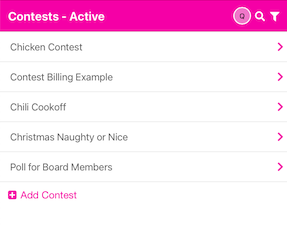
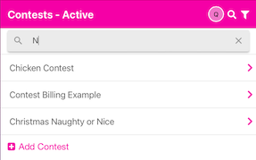
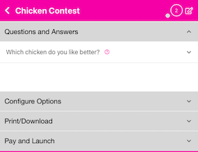
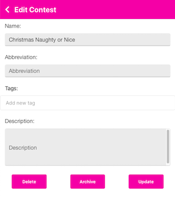

Contest Overview
Clicking on the Contests tab will take you to the area where you can see a list of your Contests.

Add Contest
You may add a new contest by pressing on the plus sign Add Contest. This will insert a blank contest name text box. Fill in the name and press tab or return.
Search for Contest
Press the magnifying glass in the upper right to search for a contest. If you have a lot of contests, this is handy.

Filter List
At the top of the screen, it will say Contests - Active or Contests - Archive. The default is to show you the Active Contests that you have. You may also show a list of the Archived Contests by choosing the filter icon in the upper right, then choosing Archive. When you first start, there won’t be any Archived Contests. However, if you start getting a lot of Contests that have been active in the past, you can Archive ‘old’ Contest by clicking on the Contest name, then in the upper right corner of the Contest Detail Screen, you may click the edit icon and choose the button. You will be prompted to confirm you would like to Archive. See Contest Edit
Contest Detail Screen
Clicking on the Contest name will open the Contest detail screen where you can add Questions and Answers as well as set properties (how many times can they vote? what color is my QR code, etc.).
Any time you have text in a list, you may long-press on it to edit the text inline. This saves you steps from pressing the pencil and editing the text in a form.
This section will show you the different options available for your contest. You add Questions and Answers here as well as Configure Options for the contest (like how many times someone can vote), Print or Download your contest as a PDF or PNG files, finally - Pay and Launch your contest.

Contest Edit
Pressing the edit icon in the upper right will open the Contest Edit screen. See below:

Update attributes
You may change the name of the contest; add an abbreviation (the abbreviations show up when you are viewing the Results tab; add tags (these are currently not displayed in the interface, but will be used in a future version to help you track things); or add a description. If you change a value, you should press the button.
Delete Contest
If you select the button, you will be prompted to make sure you really want to delete the Contest. Deleting the Contest will remove it completely and it can not be restored. All of your Questions, Answers, votes, etc. will be tossed away. So, make sure you really want to delete the Contest. An alternative is below - you may Archive the contest.
Archive Contest
If you select the button, you will be prompted to confirm you would like to archive this Contest. Archiving a contest allows you to save the information, but the Contests page won’t show it’s name if you have the Active filter enabled. See Filter List above.